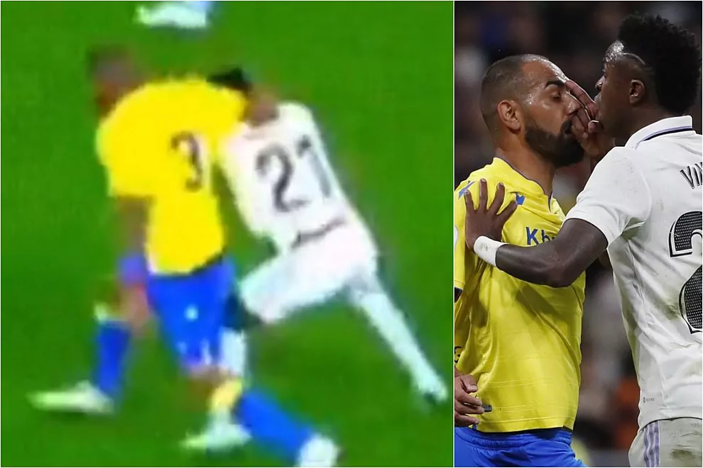

Rodrygo clama tras la agresión: "Fali me mira y me da, es una vergüenza, no sé para qué está el VAR" El brasileño, enfadado tras el golpe del central del Cádiz El partido entre Real Madrid y Cádiz tuvo muchos momentos calientes, pero hubo uno que hizo saltar especialmente al conjunto blanco. En un ataque del equipo madridista, Fali se desentiende del balón y golpea con el brazo en la parte posterior de la cabeza a Rodrygo, que cae al suelo. El árbitro no señala nada, el VAR no entra y Vinicius se encara con Fali en una bronca que acaba con amarilla para los dos. Durante el encuentro no se vio ninguna buena imagen de la acción, tan solo una toma lejana, pero suficiente para comprobar cómo el defensa cadista golpea al delantero brasileño, que se mostró muy enfadado tras el encuentro. "Creo que no es un incidente, lo ha hecho a propósito, me ha mirado y me ha dado, es una vergüenza porque luego me dice que no ha hecho nada, el VAR esta ahí no sé para qué, es una vergüenza", dijo Rodrygo en DAZN. me dijo que no hizo nada 🤣🤣🤣🤣🤣🤣🤣🤣🤣🤣🤣🤣🤣🤣🤣🤣🤣🤣🤣🤣🤣🤣🤣 https://t.co/rPz2tTFjCY — Rodrygo Goes (@RodrygoGoes) November 10, 2022 Luego, en su cuenta de Twitter, enlazando el vídeo de la acción, Rodrygo escribió: "Me dijo que no hizo nada", un mensaje que acompañó de muchas caras sonrientes.  El palo de Fali a Vinicius: "Hay que respetar un poco" Fali dio su versión del momento: "Le doy un poquito bastante, pero no es para hacerle daño. No es un codazo. Con la imagen parada, parece más de lo que es. Me he disculpado rápidamente". Y aprovechó, en El Larguero, para darle un palo a Vinicius: "Igual que de Rodrygo digo que es un buen chico, de Vinícius no voy a decir nada. Prefiero no decir nada. Un club como el Real Madrid debe controlar ciertas actitudes. Hay que respetar un poco más porque somos compañeros". También habló de la acción Carlo Ancelotti tras el encuentro: "Me ha dicho que le han dado un puñetazo, he visto un vídeo y me ha parecido una agresión".